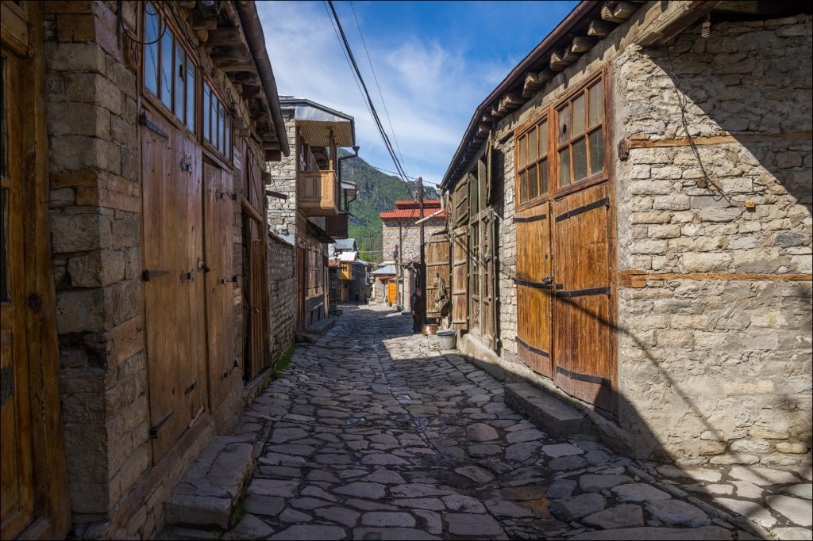
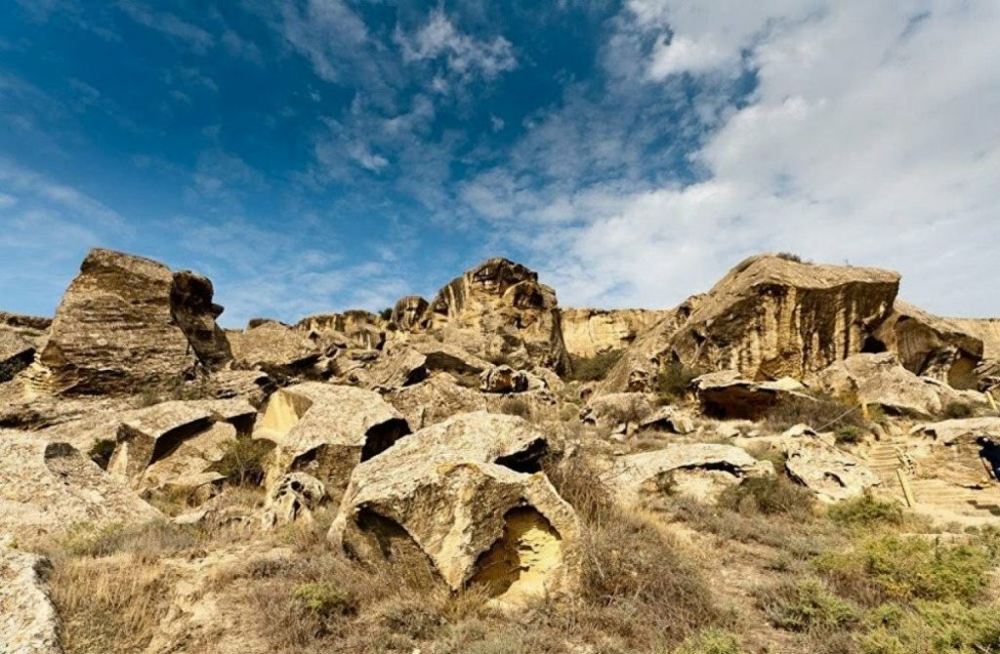
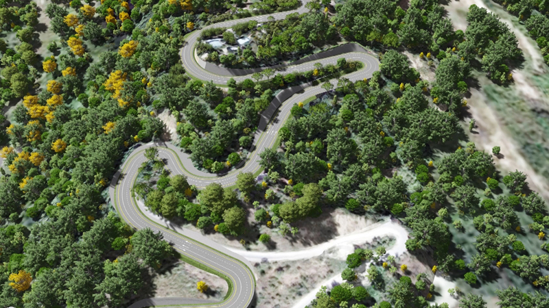

Qəsəbə Azərbaycanın şimalında, Böyük Qafqaz sıra dağlarının cənub yamacında, dəniz səviyyəsindən 1505 m hündürlükdə yerləşir. Lahıc Girdiman çayının sahilində yerləşməklə Babadağ və Niyaldağ silsilələri ilə əhatə olunur və ona təbii qala şəraiti bəxş edir. 1980-ci ildən muzey-qoruğa çevrilmiş Lahıcda həmin illərdən yadigar qalan məhəllə məscidləri, su kəməri və kanalizasiya (kürəbənd), Girdiman qalası qorunur, sənətkarlıq ənənələri davam və inkişaf etdirilir. Lahıc qəsəbəsinin ən görkəmli abidəsi Girdiman çayının sahilindəki 72 otaqlı, 3 mərtəbəli Hacı Paşa evidir. Bu ev XVIII əsrin ortalarında 14 il müddətində, Lahıcın memarlıq üslubunun bütün komponentləri nəzərə alınaraq inşa olunub. Bu binanı Lahıc camaatı "Hacılar həyəti" də adlandırırlar.

Qobustan torpağı arxeoloji abidələrlə zəngindir. Bu günə qədər burada 30 ədəd kurqan və 20-yə yaxın ibtidai insan düşərgəsi aşkar edilib. Onlar iri ölçülü əhəng daşlarından hazırlanmışdır. Qədim əcdadlarımızın həkk etdiyi rəsmlər Böyükdaş, Kiçikdaş, Cinqırdağ və Yazılı təpəsinə də rast gəlinir. Burada ibtidai insanlar, heyvanlar, döyüş səhnələri, ayin xarakterli rəqslər, öküzlərin döyüşü, silahlı avarçəkənlərlə dolu olan qayıqlar, əllərində nizə tutmuş döyüşçülər, dəvə karvanları, günəş və ulduz təsvirləri vardır

Ağsu rayonu şərqdən və şimal-şərqdən Şamaxı, cənubdan Hacıqabul və Kürdəmir, qərbdən və şimali-qərbdən İsmayıllı rayonları ilə həmsərhəddir. Rayonun relyefi şimalda və şimal-şərqdə Niyaldağ, Hinqar, Ləngibaz silsiləsindən ibarət olub dağlıqdır. Cənub əraziləri Şirvan düzü ilə hüdudlanaraq ovalıq ərazilərdir. Ərazinin mərkəzi hissəsindən Ağsu çay, qərbindən isə Girdimançay axır. Ağsu şəhəri hər iki sahilində, Şirvan düzünün şimal-şərq qurtaracağında,Hinqar silsiləsinin ətəyində yerləşir. Dağlıq sahədə meşə və kolluqlar vardır. Qarabağın rəmzlərindən sayılan məşhur xarı bülbül çiçəyinə Ağsu rayonunun dağlıq ərazilərində də (xüsusən Bico dağlarında) daima rast gəlinmişdir.